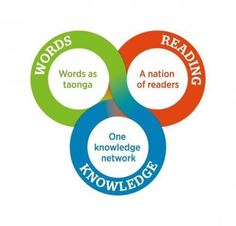

National Library of New Zealand: Positioning for the future
This survey is now closed to submissions.
The National Library of New Zealand has released its Draft Strategic Direction to 2030 and is interested in your feedback. Comments are open until 31 August 2016.
Kōkiri, kōkiri, kōkiri!
Whakarongo ake au ki ngā reo o te motu
E karanga mai ana
Huakina mai ngā tatau o tō whare
Kia mahi tahi tātou, kia inu ai mātou
I Te Puna Mātauranga o Aotearoa
The message from the people
Clearly asks us
To open our doors
So that we may work together
And share the information
Held in the National Library of New Zealand
This consultation document is provided in both English (below) and te reo Māori.
Introduction
The National Library of New Zealand is proposing a bold and ambitious set of strategic directions to 2030. Our aspiration is for a prosperous nation that ensures New Zealanders everywhere have easy access to knowledge, that engages everyone in reading for pleasure, and that celebrates words as a valued part of our diverse heritage. We are setting ourselves this challenge to bring to life the National Library’s core purpose to enrich the cultural and economic life of New Zealand and its interactions with other nations.
We want your feedback on:
- the strategic directions we have outlined
- insights on your areas of common strategic interest and expertise
- ideas on opportunities to work together to turn knowledge into value.
Draft National Library Strategic Direction consultation sections
One knowledge network
A nation of readers
Words as taonga
Published submissions
Turning knowledge into value
In 2015 the National Library commissioned exploratory research involving library and cultural sector stakeholders to help shape our strategic direction through to 2030. We undertook a series of staff workshops and consultation briefings with peers across government, and completed a desktop review of key New Zealand and international data and experiences.1
This work affirmed our core purpose as the National Library, and our roles to collect, protect and share New Zealand’s documentary heritage, support the work of libraries across New Zealand, and collaborate with others.2 Also highlighted were a number of interconnected challenges for New Zealand:
- Removing barriers to sharing knowledge and ideas if we are to increase innovation, solve real-world problems and generate economic value.
- Improving literacy to boost social participation and provide skills to work in a high-productivity economy.
- Addressing issues related to social cohesion and discrimination that can stem from a culturally diverse population, allowing all New Zealanders to enjoy the benefits of our diversity.
Together, these challenges are the drivers for our three proposed strategic responses centred upon:
- knowledge – one knowledge network
- reading – a nation of readers
- words – words as taonga.

Our approach to working together
Our intention is to build on our strengths as New Zealand’s National Library to create strategic responses that are relevant to New Zealand and that develop over time to accommodate a changing environment. In order to do this we need to look to three horizons:
Horizon 1: how to continuously improve what we do now.
Horizon 2: how to wisely invest in the next generation of products and services in the medium term.
Horizon 3: how to explore and innovate in transformative ways to have a genuine long term impact.
Our stakeholders are asking us to be more visible and to lead through collaboration, research and system change. Working alone, the National Library is limited in its ability to bring about such change. No single government agency, policy or sector can tackle or solve the increasingly complex problems we face as a country.
We know many organisations and individuals are deeply passionate about the challenges outlined in this document. We are committed to work in innovative ways with traditional and new partners in government, business, philanthropic organisations, the non-profit sector and with the public to make a real difference for New Zealanders. We are interested in your views about our strategic directions and whether you or your organisation would be willing to engage in a new way of working together.
The full text of the National Library’s Draft Strategic Direction is included in these web pages. A PDF version of the National Library’s Draft Strategic Direction (PDF 2.74MB) is also available for download.
References
1. Positioning the National Library for the future: examples of innovations in library management overseas (PDF 368KB); Sue Sutherland, 'Stakeholder interviews report' (PDF 520KB). November 2015
2. National Library of New Zealand (Te Puna Mātauranga o Aotearoa) Act 2003
In this section
One knowledge network
Transforming the way knowledge is shared to ensure New Zealanders have easy access to publicly held collections and research.
A nation of readers
Creating a nation of readers with the skills for a modern life, to build social cohesion, participation and well-being.
Words as taonga
New Zealanders will value the words, sounds and pictures created and collected as documentary heritage to learn from the past and inspire our future.
Published submissions p. 1
Read what people are saying about the National Library's Draft Strategic Direction to 2030: Positioning for the Future
Published submissions p. 2
Read what people are saying about the National Library's Draft Strategic Direction to 2030: Positioning for the Future
Published submissions p. 3
Read what people are saying about the National Library's Draft Strategic Direction to 2030: Positioning for the Future
Published submissions p. 4
Read what people are saying about the National Library's Draft Strategic Direction to 2030: Positioning for the Future
Published submissions p. 5
Read what people are saying about the National Library's Draft Strategic Direction to 2030: Positioning for the Future
Published submissions p. 6
Read what people are saying about the National Library's Draft Strategic Direction to 2030: Positioning for the Future
Published submissions p. 7
Read what people are saying about the National Library's Draft Strategic Direction to 2030: Positioning for the Future
Published submissions p. 8
Read what people are saying about the National Library's Draft Strategic Direction to 2030: Positioning for the Future
Published submissions p. 9
Read what people are saying about the National Library's Draft Strategic Direction to 2030: Positioning for the Future
Published submissions p. 10
Read what people are saying about the National Library's Draft Strategic Direction to 2030: Positioning for the Future
Emailed submissions
Read what people are saying about the National Library's Draft Strategic Direction to 2030: Positioning for the Future
Last Updated
Page last updated: